How's my Creek?
Explore water quality ratings for rivers and streams across 17 mountain counties and 7 North Carolina river basins
Jump to first sectionExplore water quality ratings for rivers and streams across 17 mountain counties and 7 North Carolina river basins
Jump to first sectionSelect a county or community below to view its sampling sites. Printable reports are available with site descriptions and the most recent VWIN water quality data.
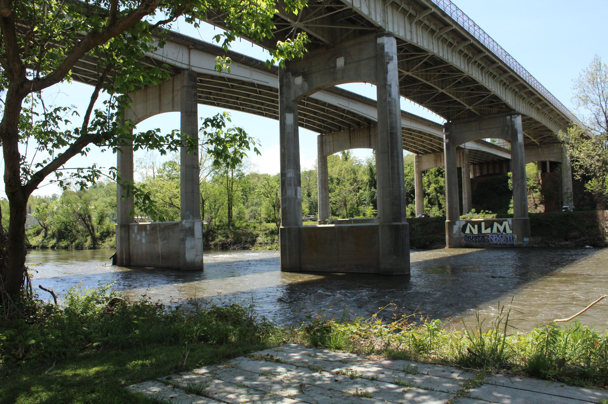
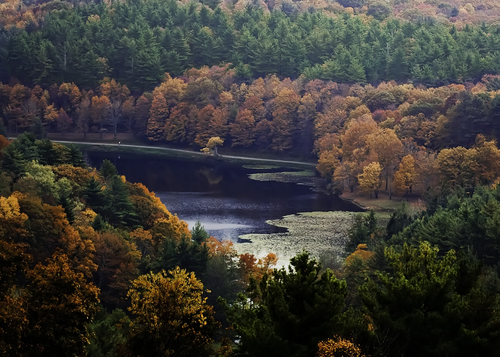
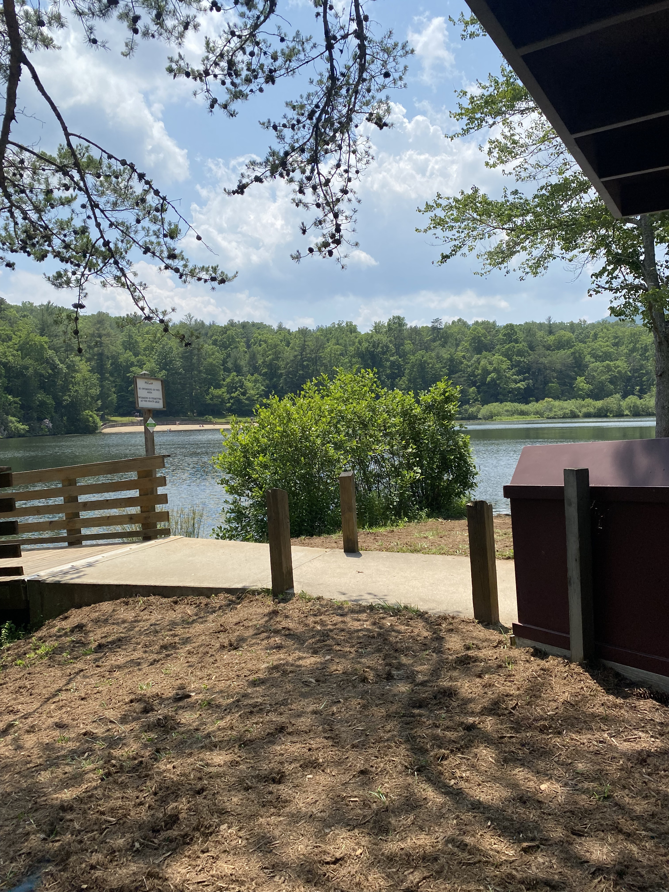
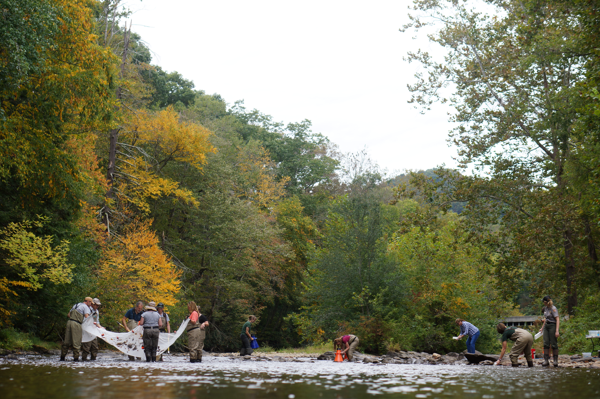
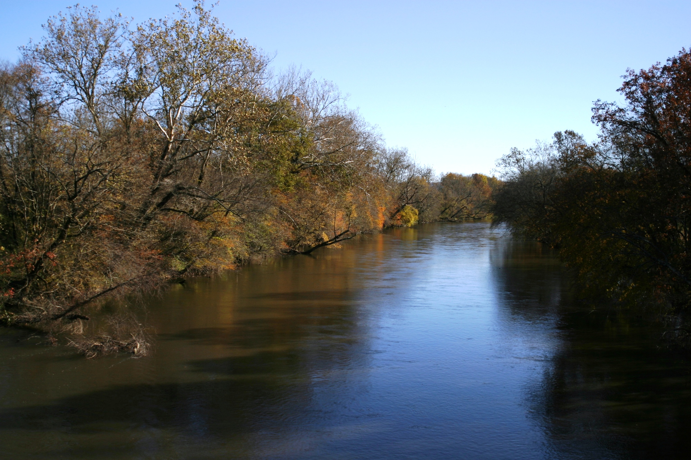
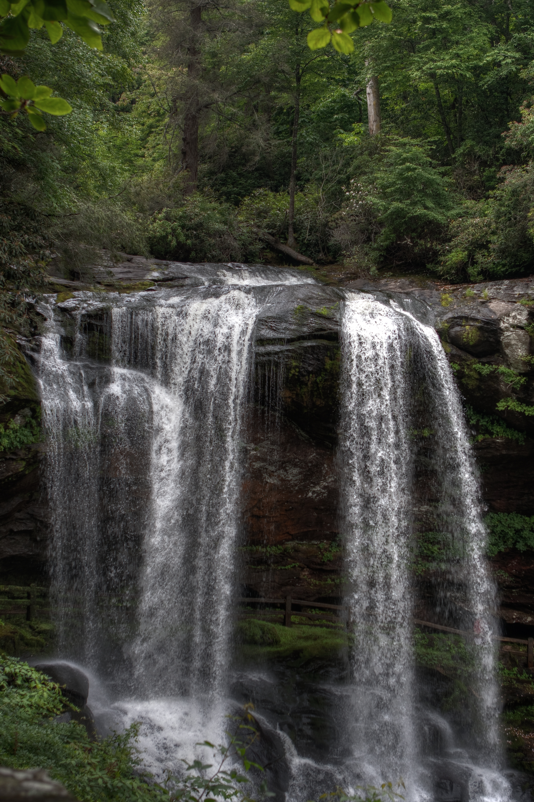
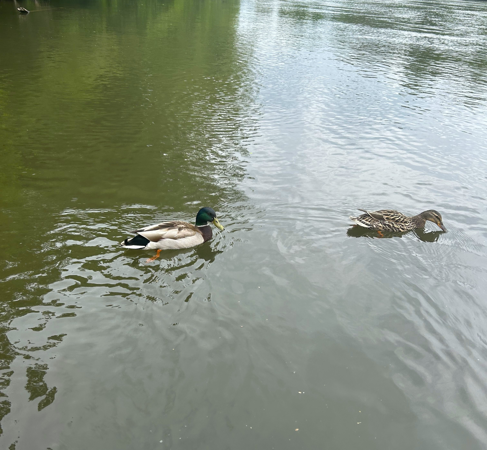

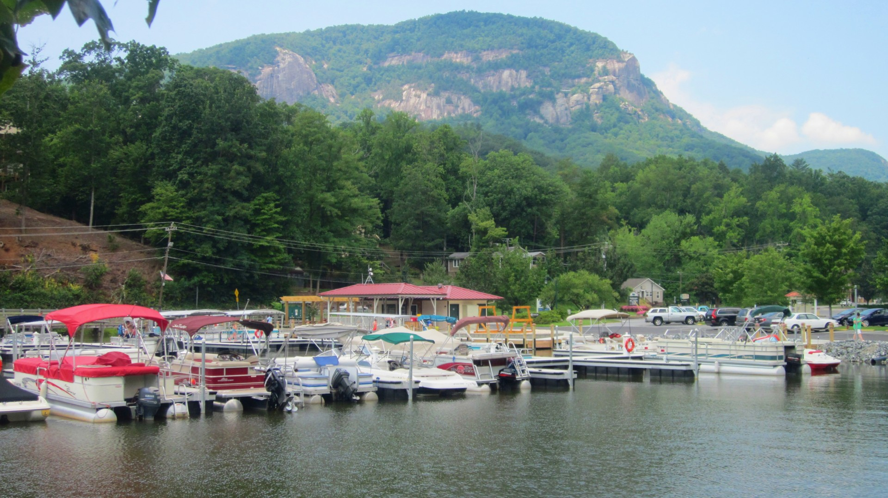
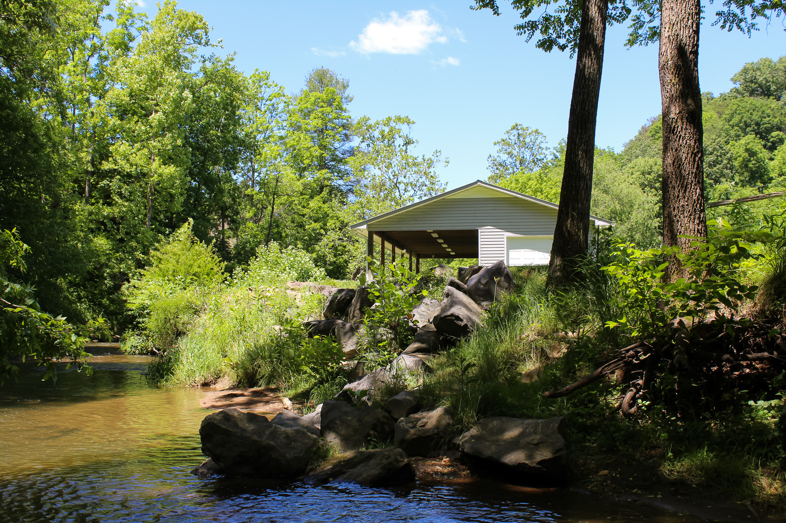
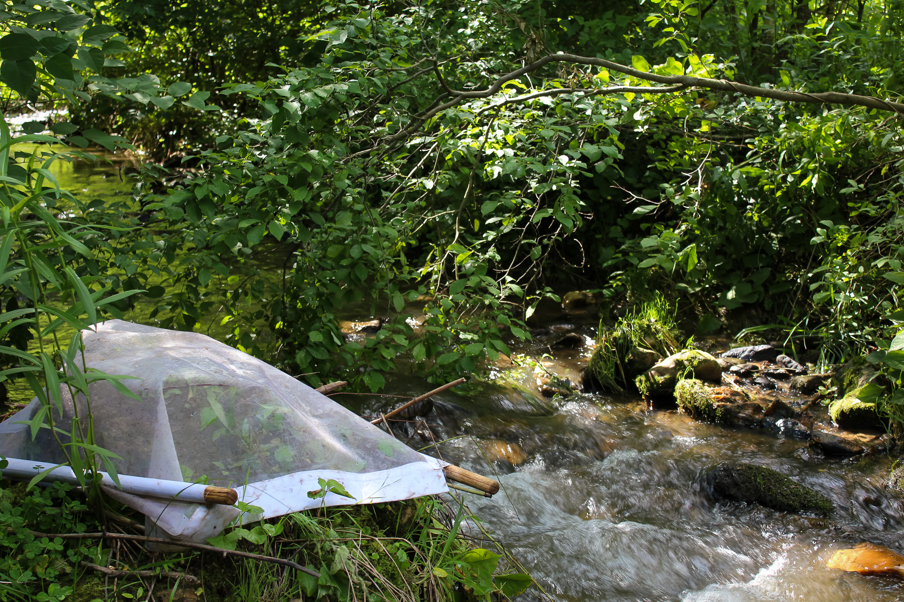
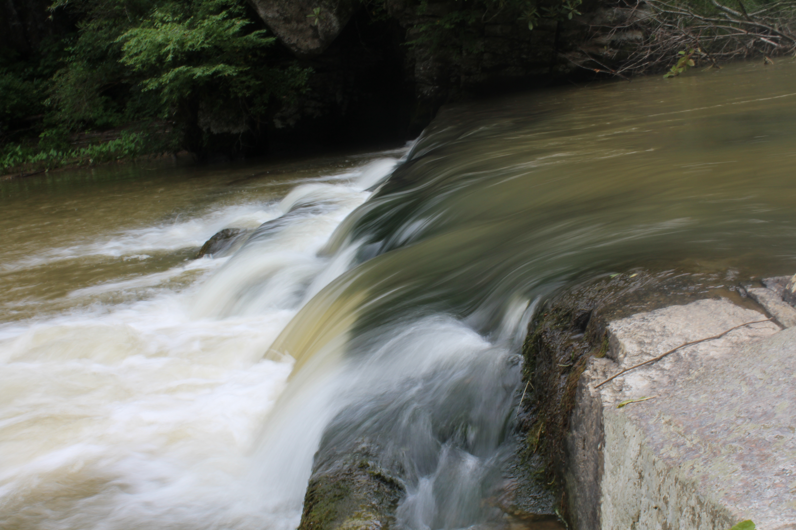
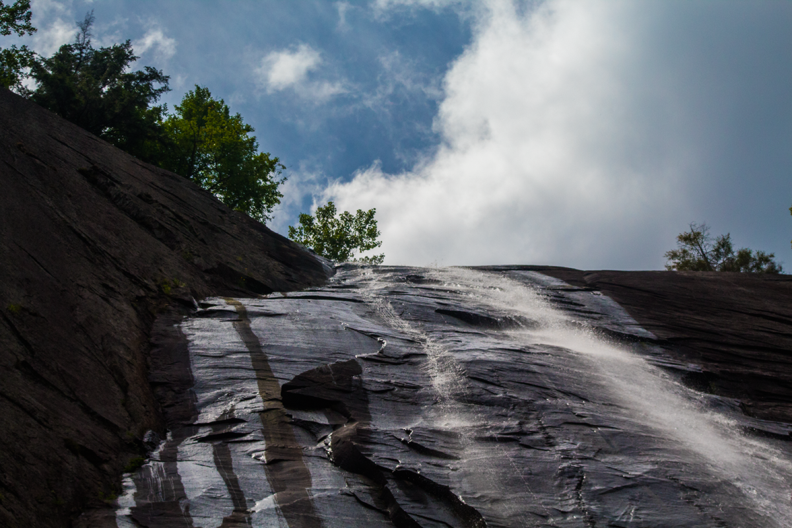
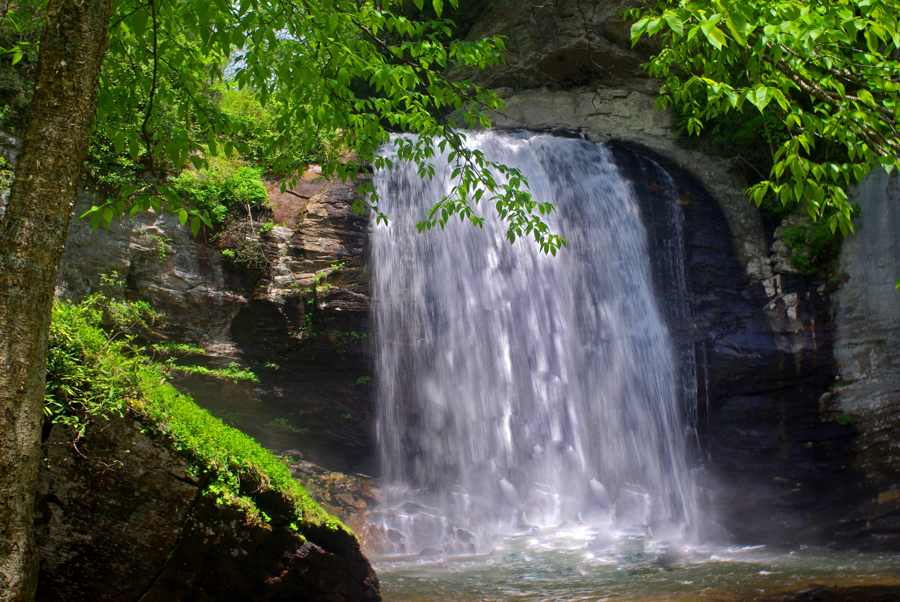
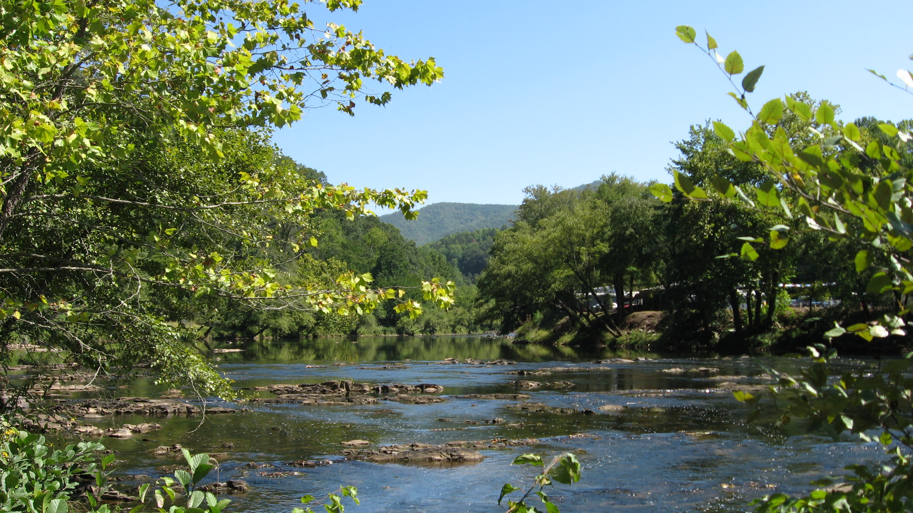
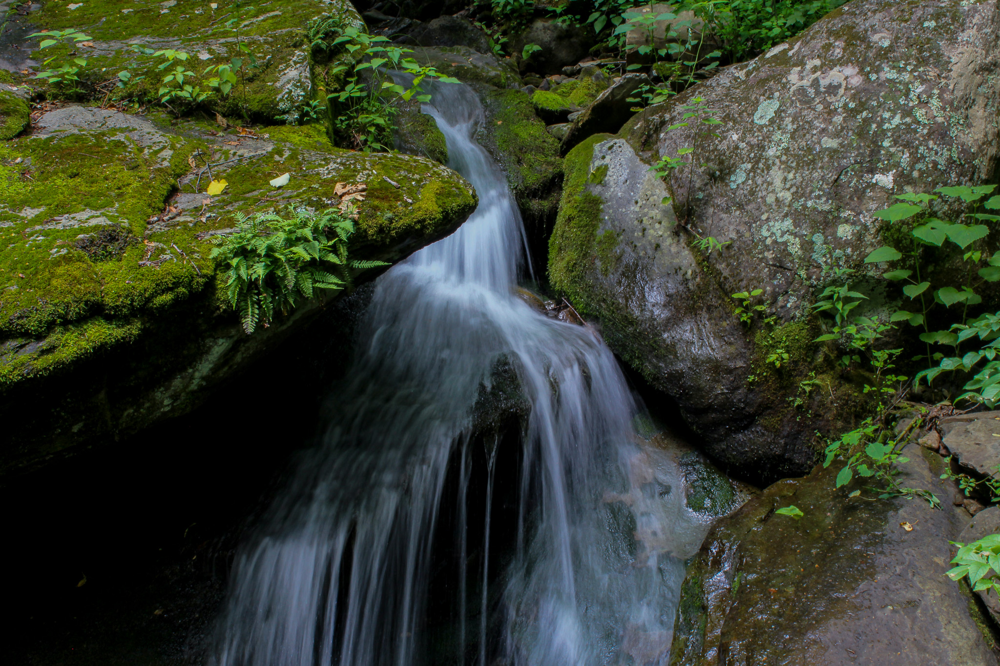
Explore an interactive map of VWIN sites to learn about water quality in your neighborhood.
VWIN ratings are calculated for 3-year periods. See how the past three years have compared to prior years at your site.
FiCCompare VWIN water quality parameters before and after Hurricane Helene at your site.
Explore the Helene DashboardIf you have any questions or would like to share VWIN site photos, please email us at staff@eqilab.org.